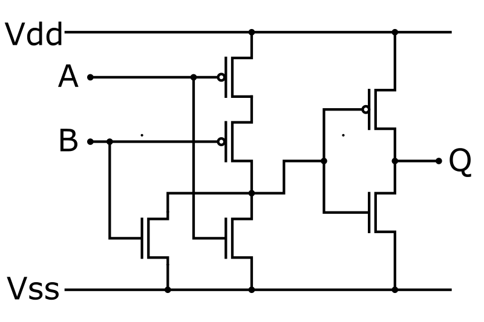

The OR Gate is a logic gate, an electronic component that can perform logic operations on the voltage it is applied on its input pins. It allows to apply the OR logic operation on its two input pins.
Here is the electronic schematic of the OR gate:

We remark that the last piece on the right is an inverter (NOT gate). Inputting a high-signal on either A or B or both of them will activate the bottom nMOS transistors which will drain the low-signal from Vss to the inverter gate, while one of the pMOS transistors will be in a blocking state because of the one high-signal on either A or B. The inverter will invert the signal to the high-signal (Vdd). The only way to have a low-signal at the end of this circuit is to input low-signal on both A and B. This is thus the definition of the OR operator.
On this gate, the two nMOS transistors of the left part are in parallel (that is, each one is connected so that the signal at the output of the pair of transistor is Vss only if one of them is passing). The pMOS transistors are connected in series; such that the output depends on the state of both transistors.